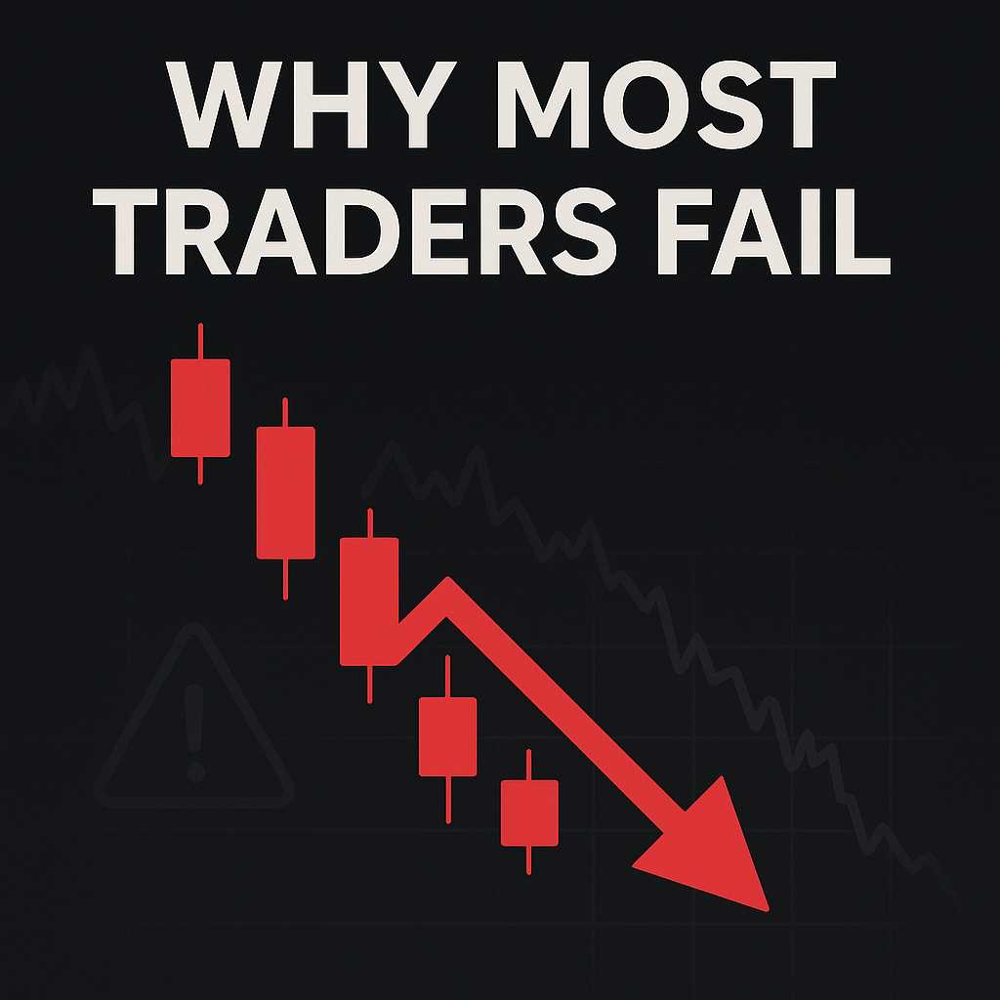

Why Most Traders Fail
It’s not just about strategy — mindset and emotions matter more than charts. Every day, thousands of traders enter the markets with a plan, some indicators, and a dream. Yet most of them still lose.
The Truth About Trading
You can have the perfect setup, a clean strategy, and even solid backtests. But if your mind isn’t disciplined, it all falls apart. The problem isn’t always the system — it’s the trader behind it.
Many fail because they chase quick profits, get greedy after wins, or hold onto losing trades hoping they’ll turn around. These emotional errors drain accounts faster than any bad signal ever could.
The Emotions That Kill Traders
- Fear: It stops you from entering valid trades or makes you close early.
- Greed: It pushes you to overtrade or increase lot sizes recklessly.
- Revenge: After a loss, you jump back in angry — and dig deeper holes.
- Impatience: You skip confirmations, break rules, and regret it after.
The chart isn’t your enemy — your reaction to it is.
Mindset Over Method
Winning traders treat this like a business, not a game. They manage risk first, not profits. They journal their trades, study their weaknesses, and work on mental discipline every single day.
Success in trading starts in the mind. Without the right mindset, even the best strategy will fail you.
Final Words
If you’re struggling, don’t just look for a better indicator. Look inside. Fix your mindset, master your emotions, and the market will reward you in time.
Remember: **Emotions destroy more traders than any setup ever will.**
Mr Right— Eugene(GrindHub Creator)
← Back to Blogs